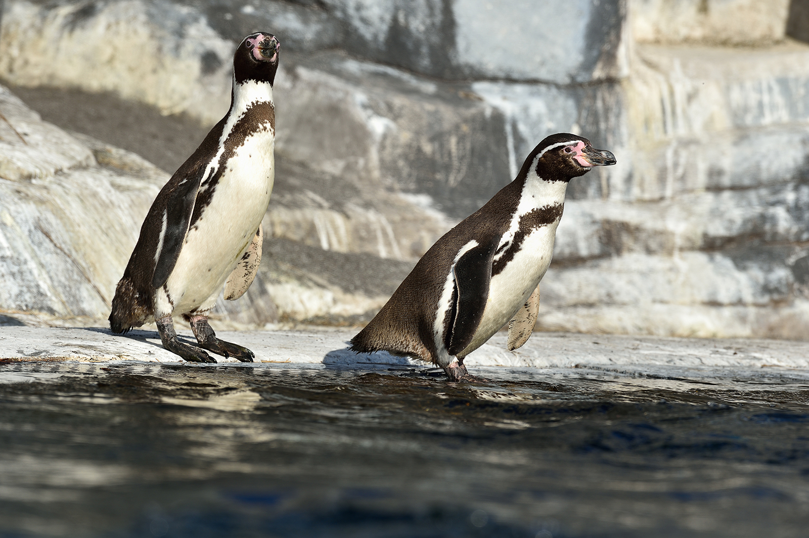

Its nearest relatives are the African penguin, the Magellanic penguin and the Galápagos penguin. The Humboldt penguin and the cold water current it swims in both are named after the explorer Alexander von Humboldt. The species is listed as vulnerable by the IUCN with no population recovery plan in place.
Humboldt penguins nest on islands and rocky coasts, burrowing holes in guano and sometimes using scrapes or caves. In South America the Humboldt penguin is found only along the Pacific coast,[6] and the range of the Humboldt penguin overlaps that of the Magellanic penguin on the central Chilean coast. It is vagrant in Ecuador and Colombia.